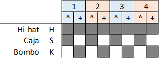
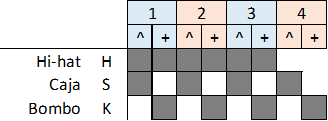
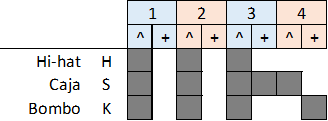
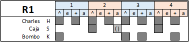
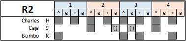

Intro: (R1: 2)
(R1: 3)(R2: 1)
Estrofa: (R1: 4+4)(Doble caja en 2-3y)
(R1: 4)
Estribillo: (B: 3)(Br1: 1)
Estrofa: (R2: 4+4)
(R2: 4)
Estrofa: (R1: 4+4)
(R1: 4)
Estribillo: (B: 3)(Br2: 1)
Estrofa: (R2: 4+4)
Estrofa: (R2: 4+4)
Estrofa: (Sil: 4)(R1: 4)
(R1: 4)
Estribillo: (B: 3)(Br2: 1)
Estrofa: (R2: 4+4)
(R2: 4+4)
(Batería) (Bajo) Meet you downstairs Cause you're my fellow By the time I cheated myself (Silencio) Upstairs in bed Run out to meet There'll be none of him I cheated myself (Trompetas) Sweet reunion, Jamaica and Spain Then you notice You shrug, and it's the worst I cheated myself I cheated myself




